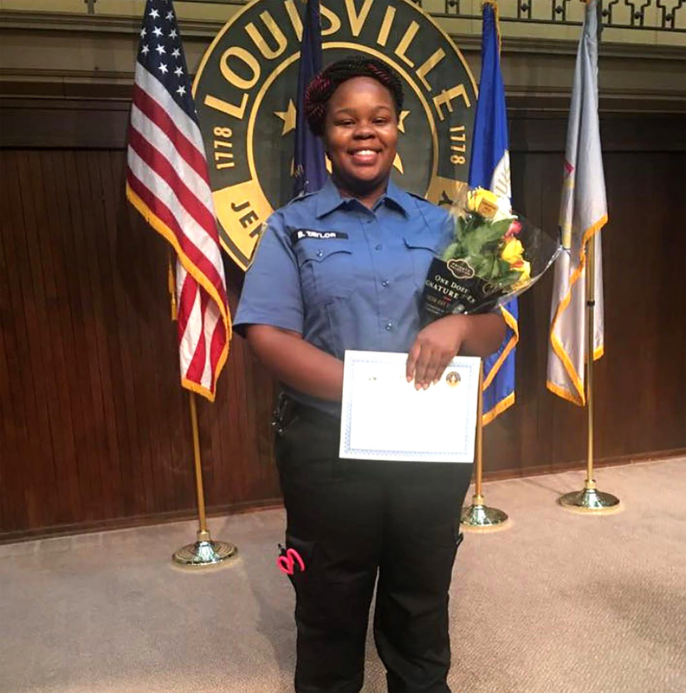
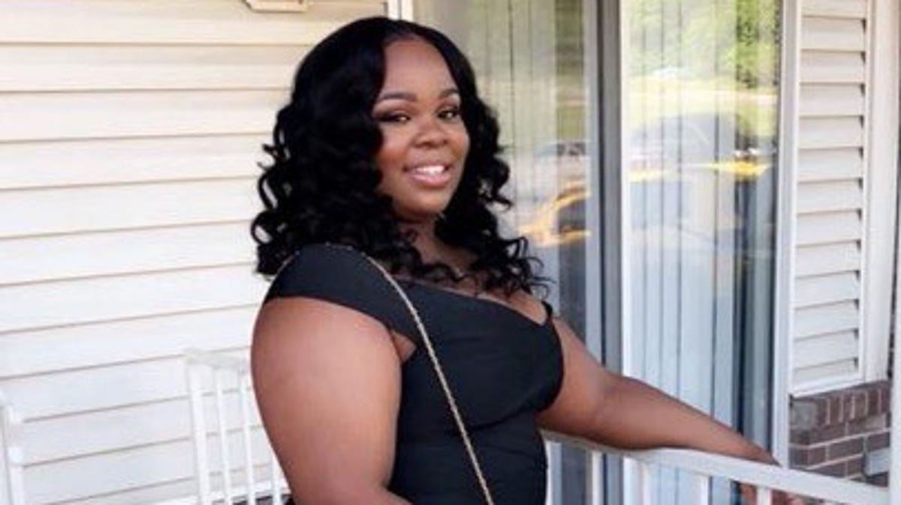

| Her Life | Her Death | Her Case | How You Can Help | Contact Us |
|---|

Breonna Taylor was born in Grand Rapids, Michigan. Her mother, Tamika Palmer said, “she was a better version of me…full of life. Easy to love” (Callimachi). Her high school scrapbook included the note, “graduating this year on time is so important to me because I will be the first in my family to accomplish this… I want to be the one who finally breaks the cycle of my family’s educational history. I want to be the one to finally make a difference” (Callimachi).
Her twitter account portrayed a woman who was among other things, loyal, frequently cold, and optimistic about the future.

Kenneth Walker was described by her family as “a man who treated her right.” Her home was covered in post-it notes filled with goals. She just bought a car and was trying to have a baby with her current boyfriend Mr. Walker, they had already picked out a name (Callimachi).
| Her Life | Her Death | Her Case | How You Can Help | Contact Us |
|---|